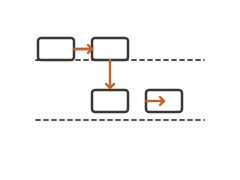
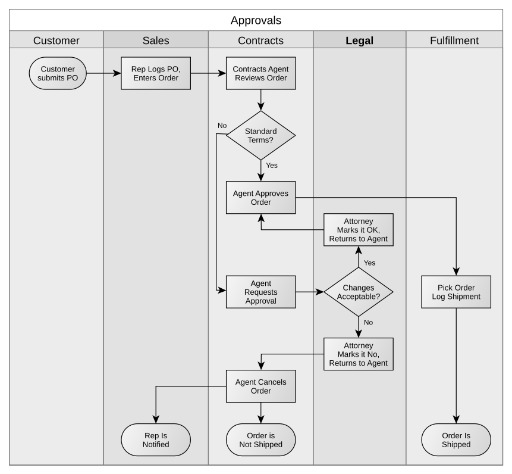
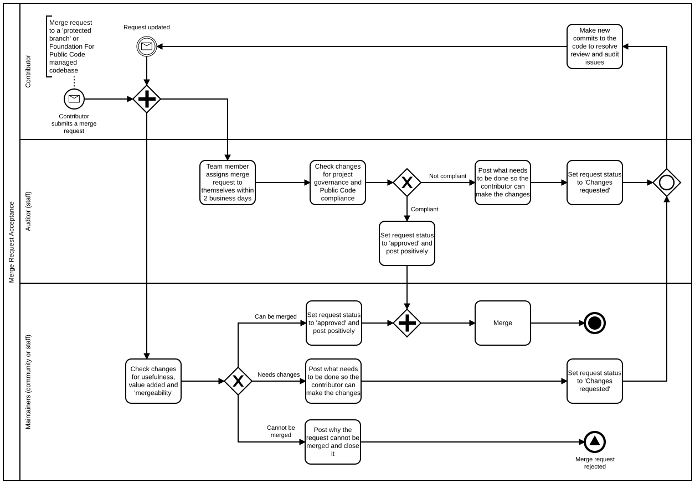
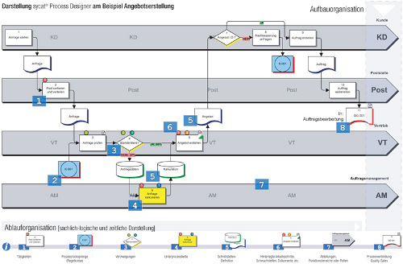
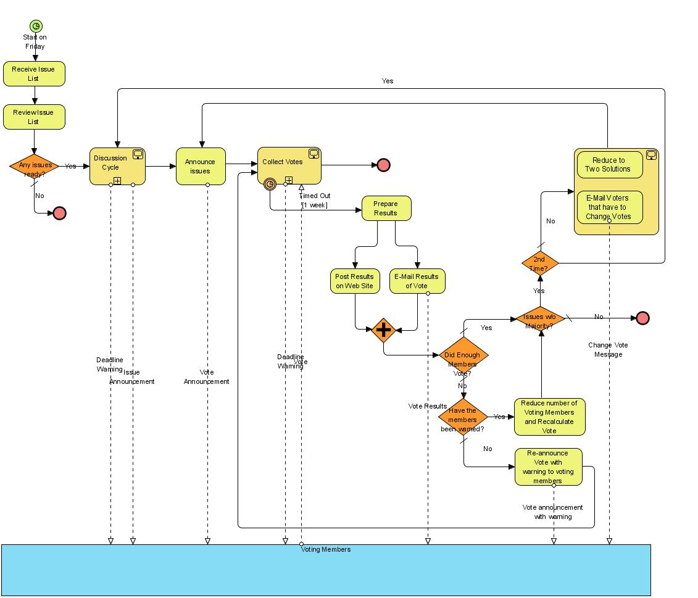
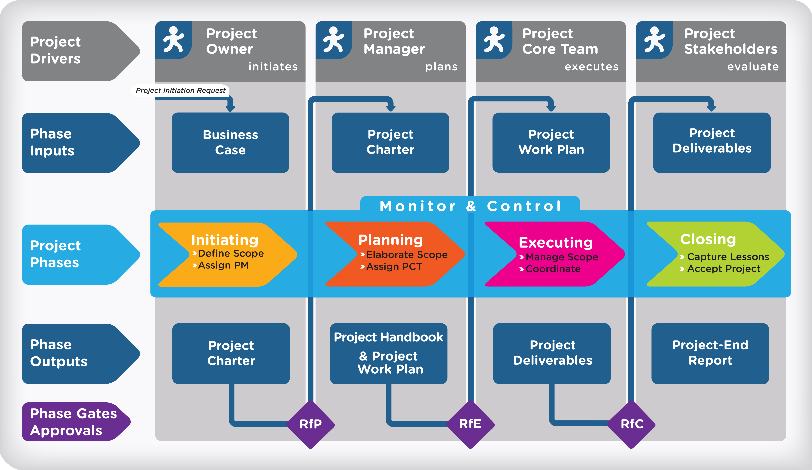

Swimlane diagram
About
A swimlane diagram is a cross-functional flowchart that lays out a process as a sequence of steps, with each step placed in a lane that represents the actor, role, or system responsible for it. As the flow moves from lane to lane, the handoffs between participants become explicit — and handoffs are precisely where processes tend to break. By making responsibility and sequence visible at the same time, swimlanes turn a tangle of "who does what when" into a structure a whole team can read and fix together.
When to use
Use a swimlane diagram for processes that span multiple roles, teams, or systems, when you need to clarify who is responsible for each step and where work passes between participants. It is a strong tool for diagnosing where delays, duplication, or dropped balls occur at the seams.
When not to use
Avoid swimlanes for simple linear processes carried out by a single actor, where a plain flowchart is lighter, and for experiential or emotional mapping, where a journey map captures the human dimension that a process diagram omits.
References
Examples
Click any example to view full size and visit the original source.




